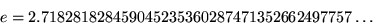
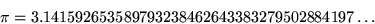

What other constants can you approximate well in this manner?
| n | expression | value | error | author |
|---|---|---|---|---|
| 1 | 1 | 1. | .42 | EF |
| 2 | .1.2 | .6 | .053 | BC |
| 3 | 3–1/2 | .5773 | .00013 | EF |
| 4 | (4–.3+.1)2 | .57722 | 1.04E–5 | RS |
| 5 | (4–3+.1.5)–2 | .5772153 | –2.72E–7 | RS |
| 6 | (.6((.1+.4)–.3)–.2).5 | .577215656 | –8.38E–9 | GB |
| 7 | 3(–.5–2(–4–.7(.1–6))) | .577215666 | 1.21E–9 | RS |
| 8 | (.4((3×.8+6)–7)+.1.5)–2 | .5772156648 | –8.10E–12 | RS |
| 9 | .8(.26749–1/3)–.5 | .5772156648 | –4.25E–12 | RS |
| n | expression | value | error | author |
|---|---|---|---|---|
| 1 | 1 | 1. | –1.7 | EF |
| 2 | 1+2 | 3. | .28 | EF |
| 3 | 3–.1–.2 | 2.70 | –.018 | EF |
| 4 | 2(.1+.3)–.4 | 2.71829 | 9.16E–6 | RS |
| 5 | 3.5+4–(.12) | 2.718284 | 1.68E–6 | GB |
| 6 | ((.4+6.2)×5–1)/3 | 2.71828180 | –2.66E–8 | BC |
| 7 | 2((.3+.1)–.4–5–7.6) | 2.718281812 | –1.57E–8 | RS |
| 8 | (1+2–76)(438+.5) | 2.718281828 | 3.96E–47 | RS |
| 9 | (1+9–47×6)3285 | 2.718281828 | –2.01E–18457734525360901453873570 | RS |
| n | expression | value | error | author |
|---|---|---|---|---|
| 1 | 1 | 1. | –2.1 | EF |
| 2 | 1+2 | 3.0 | –.14 | EF |
| 3 | (1/.3)–.2 | 3.13 | –.0082 | BC |
| 4 | .4–(2.1).3 | 3.14156 | –3.26E–5 | GB |
| 5 | 3+.2/(.4.1+.5) | 3.141598 | 5.92E–6 | BC |
| 6 | (4+6/(3(.2)(.1))).5 | 3.14159263 | –1.38E–8 | BC |
| 7 | 3+1/(7+4(6–5–2)) | 3.14159269 | 4.33E–8 | RS |
| 8 | 2(5.4)–.6–.138/7 | 3.141592654 | 5.15E–10 | RS |
| 9 | 2(5.4)–.6–(.39/7)(.8.1) | 3.14159265359 | 6.60E–13 | RS |
| n | expression | value | error | author |
|---|---|---|---|---|
| 1 | 1 | 1. | –3.6 | RS |
| 2 | 1/.2 | 5. | .33 | BC |
| 3 | (.1)–2/3 | 4.64 | –.027 | RS |
| 4 | 4×1+2/3 | 4.666 | –.0025 | RS |
| 5 | (.3–.1+.4)2/.5 | 4.66923 | 2.94E–5 | RS |
| 6 | (.3–(.61.5)–.4)2 | 4.6692017 | 1.27E–7 | GB |
| 7 | .2 + (4 + .5(–13/6)).7 | 4.66920161 | 8.59E–9 | GB |
| 8 | 4+.8(3×.6)–.2(7+.1.5) | 4.66920161 | 1.01E–8 | RS |
| 9 | 4+.8(2×.9)–(7×6)–3.15 | 4.669201608 | –3.04E–10 | RS |
| constant | digits | expression | value | error | author |
|---|---|---|---|---|---|
| γ | .57721 | (1+(7/.7)^–.5)^–2 | .5772153 | –2.72E–7 | RS |
| e | 2.71 | (2–.1)/.7 | 2.714 | –3.99E–3 | RS |
| π | 3.141 | (.4^.1)/.3+.1 | 3.1414 | –1.14E–4 | RS |
This got me thinking. What is the best approximation to these constants using ANY n digits? Here's the best known:
| expression | value | error | author | |
|---|---|---|---|---|
| 1 | .6 | .6 | .023 | AZ |
| 2 | 3–.5 | .5773 | .00013 | EF |
| 3 | 3–1/2 | .5773 | .00013 | EF |
| 4 | (1+.1^.5)^–2 | .5772154 | –2.72E–7 | GB |
| 5 | 5×.3^(.6^–(.8^–.6)) | .5772154 | –2.57E–9 | GB |
| 6 | ((6–(.1^(–.7)))/((.1^(–.4))–.8)) | .5772156642 | –6.27E–10 | AZ |
| expression | value | error | author | |
|---|---|---|---|---|
| 1 | 3 | 3. | .28 | EF |
| 2 | 2.7 | 2.70 | –.018 | EF |
| 3 | 2.4–.4 | 2.71829 | 9.16E–6 | RS |
| 4 | (.2+6^.2)/.6 | 2.71828180 | –2.66E–8 | GB |
| 5 | (1+9–9)99 | 2.718281825 | –3.50E–9 | RS |
| 6 | (1+9–9)99+.5 | 2.718281828 | 1.50E–18 | RS |
| expression | value | error | author | |
|---|---|---|---|---|
| 1 | 3 | 3. | –.14 | EF |
| 2 | .1–.5 | 3.16 | .026 | RS |
| 3 | .8–4+.7 | 3.1414 | –1.86E–4 | RS |
| 4 | 25.4–.6 | 3.141596 | 3.72E–6 | RS |
| 5 | .8^–(.1^–.1+5)–.9 | 3.14159268 | 3.36E–8 | GB |
| 6 | ((7–(.3^(–.7)))^(.7^(.8^.8))) | 3.141592656 | –3.14E–9 | AZ |
| expression | value | error | author | |
|---|---|---|---|---|
| 1 | 5 | 5. | .33 | GB |
| 2 | 9^.7 | 4.656 | –.014 | GB |
| 3 | 6^.86 | 4.668 | 3.50E–4 | GB |
| 4 | 9–6^(.8^.9) | 4.669198 | –3.33E–6 | GB |
| 5 | (8^.7)^(.6^–.6–.3) | 4.669201600 | 9.50E–10 | GB |
| 6 | 8^((.6^(.1–.7)–.3)×.7) | 4.669201600 | 9.50E–10 | GB |
| n | expression | value | error | author |
|---|---|---|---|---|
| 1 | 1 | 1. | .42 | RS |
| 2 | .1^.2 | .6 | .053 | RS |
| 3 | 1.2^–3 | .578 | .0014 | RS |
| 4 | (1–2^.3)/–.4 | .5778 | 6.45E–4 | RS |
| 5 | (1+.2^.3/4)×.5 | .5771 | –8.64E–5 | RS |
| 6 | 1/(2–.3+.4^.5–.6) | .5772153 | –2.72E–7 | RS |
| 7 | (.1–(23^–.45–.6))^.7 | .5772155 | –7.13E–8 | GB |
| 8 | ((.1+(2^(3^.4))×5×.6)^.7)/8 | .57721567 | 1.34E–8 | GB |
| 9 | .1^–(.2/(.3–4^–(.5^–((6×7)^–.8))–.9)) | .5772156644 | –5.01E–10 | GB |
| n | expression | value | error | author |
|---|---|---|---|---|
| 1 | 1 | 1. | –1.7 | RS |
| 2 | 1+2 | 3. | .28 | RS |
| 3 | 1+2–.3 | 2.70 | –.018 | RS |
| 4 | .1+2+.3^.4 | 2.717 | –4.80E–4 | RS |
| 5 | –.1+(–.2+.3)^–.45 | 2.7183 | 1.01E–4 | RS |
| 6 | (1+2)^(.3+.4^5+.6) | 2.718284 | 2.30E–6 | RS |
| 7 | –((.1–2)/.3^.4–.5+6/7) | 2.71828185 | 2.17E–8 | GB |
| 8 | ((.1^–.2)–((3–.4)^(.5–.6))/.7)^–.8 | 2.718281825 | –2.77E–9 | GB |
| 9 | (1+2^(–3×(4+5)))^(.6×.7+8^9) | 2.718281826 | –1.62E–9 | RS |
| n | expression | value | error | author |
|---|---|---|---|---|
| 1 | 1 | 1. | –2.1 | RS |
| 2 | 1+2 | 3.0 | –.14 | RS |
| 3 | .1^(–.2–.3) | 3.16 | .020 | RS |
| 4 | (.1+2^.3)^4 | 3.13 | –.0018 | RS |
| 5 | (.1/.2^.3^4)^–.5 | 3.1417 | 1.39E–4 | RS |
| 6 | .1^(–2/3)+4.5–6 | 3.14158 | –3.81E–6 | RS |
| 7 | (1+2^–.3)^.4^(–.5/.6^.7) | 3.1415924 | –1.88E–7 | RS |
| 8 | .1^(–2/3)+(4/.5)^–6–.7–.8) | 3.14159264 | –5.28E–9 | GB |
| 9 | (.1+2^–(3–(4^–((.5+6^–7)^8))))×9 | 3.14159262 | 2.43E–8 | GB |
| n | expression | value | error | author |
|---|---|---|---|---|
| 1 | 1 | 1. | –3.6 | RS |
| 2 | 1/.2 | 5. | .33 | RS |
| 3 | (.1)–2/3 | 4.64 | –.027 | RS |
| 4 | 1×2/3+4 | 4.666 | –.0025 | RS |
| 5 | .1^.2×(.3–4)/–.5 | 4.6690 | –1.17E–4 | RS |
| 6 | 1/(.2–3^–4)–.5^.6 | 4.6691 | –8.19E–6 | RS |
| 7 | .12×(.3+(4+.5^–.6)×7) | 4.6692019 | 3.07E–7 | GB |
| 8 | .1^–(2/((3/4.5)^(6–.7–8))) | 4.669201630 | 2.04E–8 | GB |
| 9 | 1+2^((3–.4×(.5–.6^7)–.8)^.9) | 4.669201613 | 4.02E–9 | GB |
Richard Sabey also sent results for expressions without using the decimal point, both in any order and in ascending order. Joseph DeVincentis sent results that use the digits 0 through n. In 2019, Avraham Aizenbud gave the remarkable approximation –(–896).5 × [ (–1)4–72– 30], which is not a real number, but is approximately π to about 43 digits!
Thanks to Berend Jan van der Zwaag for finding a bunch of typos.
In 2008, I extended these results by considering the best approximations to various constants using n copies of a given digit. Here are the best results.
| k \ n | 2 | 3 | 4 | 5 | 6 | 7 |
|---|---|---|---|---|---|---|
| 1 | 1 + 1 = 2 | 1 + 1 + 1 = 3 | (.1)–1/(1+1) = 3.162 | 1 + (1 + 1)1.1 = 3.143 | .1^-(.1+(.1^.1)/(1+1)) = 3.1416 (GB) | 1.1^(11+(1-.1)^-.1) = 3.141598 (GB) |
| 2 | 2 + 2 = 4 | 2 + 2(.2) = 3.149 | 22(.2)(.2) = 3.144 | 2 + 2 – 2–(.22) = 3.1414 | 2×(.2+.2+2.2^.2) = 3.1416 (GB) | 2^(2-.2^-(.2^.2-.2^-.2)) = 3.14158 (GB) |
| 3 | 3.3 = 3.3 | 3 + (.3)/3 = 3.1 | 333(.3) = 3.140 | 3 × [(3 – . 3)(.3) – . 3] = 3.1413 | .3^-((3-.3)^-((3-.3)^-3)) = 3.14157 (GB) | 3/(.33/(.3-3^-3)-.3) = 3.1415929 (GB) |
| 4 | 4 – (.4) = 3.6 | 4 – (.4) – (.4) = 3.2 | (.4)–4(.4)×(.4) = 3.139 | 4 – 4–(.44)/4 = 3.1414 | ((.4+.4)^-(.4^-(.4^4)))/.4 = 3.141594 (GB) | (4-4/(.4-.4×4^.4))^.4 = 3.141593 (GB) |
| 5 | 5 × (.5) = 2.5 | (5 + 5)(.5) = 3.162 | 5 / [5 × (.5)](.5) = 3.162 | 5 – (.5)–[5–(.5)/(.5)] = 3.1411 | .5+(5^.5)^(.5+.5^.5) = 3.141591 (GB) | .5+.5+.5^-((.5+.5^.5)^.5) = 3.14159268 (GB) |
| 6 | 6(.6) = 2.930 | 6.6(.6) = 3.103 | [6 + (.6)(.6)](.6) = 3.140 | (.6)[6 ×(.6) –(.6)–(.6)] = 3.142 | 6×6×.666^6 = 3.1415 (GB) | (6^.6)/(.6^-(6^-(.6/6))-.6) = 3.141593 (GB) |
| 7 | 7(.7) = 3.905 | 7 – 7(.7) = 3.095 | [(.7)–7 – 7](.7) = 3.147 | 77/[7+7×(.7)] = 3.1413 | (7×7)^((7×.7)^-.77) = 3.14158 (GB) | 7^-(.7-7^(.7^(7-.7^-.7))) = 3.1415927 (GB) |
| 8 | (.8) + (.8) = 1.6 | (.8)–8(.8) = 3.247 | (.8)–8×(.8)×(.8) = 3.135 | 8(.8) / [(.8) + (.88)] = 3.1416 | (8/((.8+.8)/.8^.8))^.8 = 3.1416 (GB) | (8^-((.8+.8)^-(8^(.8^.8))))^-8 = 3.1415929 (GB) |
| 9 | (.9)–9 = 2.581 | (.9)–9/(.9) = 2.868 | 9 × (.9) × (.9)9 = 3.138 | (.9) × [(.9)(.9) + (.9)–9] = 3.1416 | (9-.99×.9)×.9^9 = 3.1415927 (GB) | (.9-.9×(.99-9))×.9^9 = 3.1415927 (GB) |
| k \ n | 2 | 3 | 4 | 5 | 6 | 7 | 8 |
|---|---|---|---|---|---|---|---|
| 1 | 1 + 1 = 2 | 1 + 1 + 1 = 3 | 1 + 1 + (.1)(.1) = 2.794 | (1 + 1) × [(.1) + (.1)–(.1)] = 2.717 | 1-.1+(.1+.1)/.11 = 2.7181 (GB) | (1+.1^11)^.1^-11 = 2.71828182844 (MP) | 1*(1+.1^11)^.1^-11 (good to 10 digits) (MP) |
| 2 | 2 + (.2) = 2.2 | 2 + (.2)(.2) = 2.725 | (.2)[(.2)–(.2)–2] = 2.713 | 2[2×(.2)]–2×(.2) = 2.71829 | 2^(((2^.2)×.2^.2)^-2) = 2.71829 (GB) | 2+(2×(2+2^-2))^-.22 = 2.71827 (GB) | (2/2+.2^.2^-2)^.2^-.2^-2 (good to 17 digits) (MP) |
| 3 | 3 – (.3) = 2.7 | 3 × 3 × (.3) = 2.7 | 3 × 3–(.3)×(.3) = 2.717 | [(.3)–3 – 3 × 3](.3) = 2.7184 | (3-.3+.3^-3)^.3-.3 = 2.71827 (GB) | 3-.3^(.333+3^-.3) = 2.7182817 (GB) | (3/3+.3^.3^-3)^.3^-.3^-3 (good to 19 digits) (MP) |
| 4 | 4 – (.4) = 3.6 | 4 × (.4)(.4) = 2.772 | (.4)–[(.4)+(.4)(.4)] = 2.722 | [(4 + 4) / 4](.4)–(.4) = 2.71829 | .4+4^(4^-((.4^-.4)/4)) = 2.718287 (GB) | 4^((4-.4/4)^-(.4-.4×.4)) = 2.7182815 (GB) | (4/4+4^-4^4)^4^4^4 (good to 153 digits) (MP) |
| 5 | 5 × (.5) = 2.5 | (.5) + 5(.5) = 2.736 | 55(.5)×(.5) = 2.723 | 5 × (.55) – (.5)5 = 2.7187 | .5^-((5×.5)^(.5-.5/5)) = 2.71829 (GB) | (.5+.5+5^-5)^(.5+5^5) = 2.71828185 (GB) | (5/5+5^-5^5)^5^5^5 (good to 2183 digits) (MP) |
| 6 | 6(.6) = 2.930 | [6 – (.6)](.6) = 2.751 | (.6)–(.6) + (.6)–(.6) = 2.717 | (.6)–[(.6)×6(.66)] = 2.7183 | (6/6+6^-6)^(6^6) = 2.71825 (GB) | (.6+.6+6^(.6+.6))/(6×.6) = 2.71828180 (GB) | (6/6+6^-6^6)^6^6^6 (good to 36,305 digits) (MP) |
| 7 | 7(.7) = 3.905 | (.7) / 7–(.7) = 2.733 | 7.7(.7)×(.7) = 2.7188 | 7[(.77)–7–(.7)] = 2.71822 | (7/7+7^(-7))^(7^7) = 2.718280 (MP) | (.7^-((7+7)^(7^-.77)))/.7 = 2.7182817 (GB) | (7/7+7^-7^7)^7^7^7 (good to 695,974 digits) (MP) |
| 8 | (.8) + (.8) = 1.6 | 8 – 8(.8) = 2.722 | (.8)[(.8)–8(.8)] = 2.716 | (.8) + 8 × (.8)8×(.8) = 2.7180 | (8/8+8^(-8))^(8^8) = 2.7182817 (MP) | ((8+(8^(-8)))/8)^((8^8)×8) = 2.71828183 (MP) | (8/8+8^-8^8)^8^8^8 (good to 15,151,335 digits) (MP) |
| 9 | (.9)–9 = 2.581 | (.9) + (.9) + (.9) = 2.7 | 9–(.9) + (.9)–9 = 2.719 | (.9) + (.9) + (.9)(.9)×(.9) = 2.7181 | (9/9+9^(-9))^(9^9) = 2.718281824 (MP) | ((9+(9^(-9)))/9)^((9^9)×9) = 2.7182818280 (MP) | (9/9+9^-9^9)^9^9^9 (good to 369,693,099 digits) (MP) |
| k \ n | 2 | 3 | 4 | 5 | 6 | 7 |
|---|---|---|---|---|---|---|
| 1 | (.1)(.1) = .794 | [(.1) × (.1)](.1) = .630 | (1 + 1)–(.1)(.1) = .576 | (.1) / (.11)(.1)(.1) = .5773 | .1×((.1+.1)^-1.1-.1) = .5773 (GB) | (1+.1^(1/(1+1)))^-(1+1) = .57723 (GB) |
| 2 | (.2)(.2) = .724 | 2(.2) / 2 = .574 | 2 – (.2)–(.22) = .575 | [(.2) / (2 – (.2))]2–2 = .5773 | .2+.2^(.2^(.2^(.2^.2))) = .577218 (GB) | 2^-((.2^-.2-.2^-(.2^2))^.2) = .5772151 (GB) |
| 3 | (.3) + (.3) = .6 | (3 + 3)–(.3) = .584 | 3–3/[3+3] = .5773 | (.3)–(.3) – [(.3) + (.3)](.3) = .5771 | 3×(.3^(.3^.3))-3^-.3 = .57722 (GB) | .3/.3^((3+(.3+.3)^-3)^-.3) = .5772157 (GB) |
| 4 | 4–(.4) = .574 | (.4) / (.4)(.4) = .5770 | (.4)4×(.4) / (.4) = .5770 | [(.4)(.4) – (.44)](.4) = .57722 | .4×(.4+(4/(4-.4))^.4) = .577217 (GB) | (44+4)^-((4-.4)^-4)-.4 = .5772154 (GB) |
| 5 | (.55) = .55 | (. 555) = .555 | [5 × (.5) + (.5)]–(.5) = .5773 | (.5) / (.5)[(.5)(.5)–(.5)] = .5771 | .5^(.5+(.5^-.55)/5) = .5772158 (GB) | .5/(.5+5^-((5^(.5^.5))/5)) = .5772158 (GB) |
| 6 | (.66) = .66 | 6–(.6) / (.6) = .569 | [6 / 6 – (.6)](.6) = .5770 | [66–6 – (.6)](.6) = .5771 | .6-(6^.6)×((.6^6)/6) = .5772151 (GB) | (.6+(6-(.6^-.6)/6)^.6)/6 = .5772158 (GB) |
| 7 | (.7) × (.7) = .49 | 7 × 7(.7) = .576 | [(.7) × (.7)](.77) = .5773 | (.7) – [(.7) / (7 + 7)](.7) = .5771 | (.7^(.7×(.7+.7)))^-.7-.7 = .577211 (GB) | .7-((7-.7)^-(7^-(.7^-.7)))/7 = .5772158 (GB) |
| 8 | (.8) × (.8) = .64 | (.8) – 8–(.8) = .610 | 8–8–(.8)×(.8) = .57723 | [(.8) × (.8)]8(.8)/8 = .57727 | (.8×8^(.8^8.8))^-8 = .577216 (GB) | ((8^-((.8^8)×(.8^.8)))/.8)^8 = .577216 (GB) |
| 9 | (.9)9 = .387 | [(.9) + (.9)]–(.9) = .589 | [(.9) × (.9)](.9)–9 = .580 | [(.9) + 9–(.9)] / [(.9) + (.9)] = .576 | (9^(.9-.9^(9+9)))/9 = .57723 (GB) | (9-.9/9)/(9+9-.9^-9) = .577216 (GB) |
| k \ n | 2 | 3 | 4 | 5 | 6 | 7 |
|---|---|---|---|---|---|---|
| 1 | 1 + 1 = 2 | 1 / [(.1) + (.1)] = 5 | 1 / [(.11) + (.1)] = 4.762 | (1 + 1)–1.1 / (.1) = 4.665 | .1^-((.1^.1-.1)^1.1) = 4.67 (GB) | .1+.1+1/(1-.1^.11) = 4.66921 (GB) |
| 2 | 2 + 2 = 4 | 22.2 = 4.594 | 2–(.2)/2 / (.2) = 4.665 | 2 + 2 + (.2)2–2 = 4.668 | .2+(2×2^.2)^(2-.2) = 4.6691 (GB) | .2^-(.2^(2^-(2+.2^-(.2^.2)))) = 4.669203 (GB) |
| 3 | 3 + 3 = 6 | 3(.3) / (.3) = 4.634 | (.33)–3(.3) = 4.671 | 3[3 + (.3) × (.3)](.3) = 4.6697 | 3×(.3+.3+.3^(3^-3)) = 4.6691 (GB) | .3^-((.3+.3)^(.3^3))+3^.3 = 4.6692014 (GB) |
| 4 | 4 + (.4) = 4.4 | 4 + (.4)(.4) = 4.693 | 4 + (.4)(.44) = 4.668 | 4 / [(.4) + (.4)](.4)(.4) = 4.6690 | 4+.4^(.4/(.4^(.4/4))) = 4.6691 (GB) | .44-(4/.4^.4-4/.4) = 4.669200 (GB) |
| 5 | 5 – (.5) = 4.5 | (.5)–5(.5) = 4.711 | 5 × (.5)(.5)/5 = 4.665 | [5 – (.5)–(.5)–(.5)] / (.5) = 4.6697 | 5-(5^-(.5×5^.5))/.5 = 4.669205 (GB) | .5^5+5.5^((5-.5)/5) = 4.669203 (GB) |
| 6 | 6 – (.6) = 5.4 | 6 – (.6)–(.6) = 4.641 | 6 – (.6) – (.6)(.6) = 4.663 | 6 – 6(.6)6×(.6) = 4.670 | 6^(6/(6+.6^(.6^6))) = 4.6691 (GB) | 6×(.6^((6-.6)/66))^6 = 4.66921 (GB) |
| 7 | 7 × (.7) = 4.9 | (.7) + 7(.7) = 4.604 | (.77) + 7(.7) = 4.674 | (.7) × [7 – (7×(.7))–(.7)] = 4.6698 | 7^(.7^(.7^(.7+.7×.7))) = 4.6691 (GB) | ((.77+.7^.7)/(7+7))^-.7 = 4.6692019 (GB) |
| 8 | 8(.8) = 5.278 | (.8) / (.8)8 = 4.768 | (.88) / 8–(.8) = 4.644 | [8 / (.8)](.8)×(.8)(.8) = 4.668 | .8×(8/(.8+.8)+.8^.8) = 4.669209 (GB) | 8/(8^.8-.8^-(8.8^.8)) = 4.6691 (GB) |
| 9 | (.9)–9 = 2.581 | 9 / [(.9) + (.9)] = 5 | [(.9) + (.9)] / 9(.9) = 4.646 | (.9) + (.9) + (.9)–9 / (.9) = 4.667 | 9^.9-.99×.9^-9 = 4.6693 (GB) | .9/(.99+.9-(.9+.9)^.9) = 4.669207 (GB) |

If you can extend any of these results, please e-mail me. Click here to go back to Math Magic. Last updated 3/11/19.